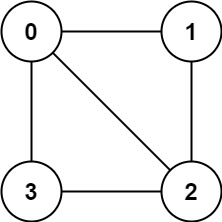
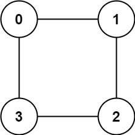

785. 判断二分图
BFS 染色：起点染 +1，出队时把未染色的邻居全染成反色；发现相邻同色就不是二分图；图不连通就每个未染色点都当一次起点。
思路
- 二分图 ⇔ 只用两种颜色染色且每条边两端异色；
color[u]取0（未染）/1/-1。 - BFS：起点染
1入队；出队u时，未染色的邻居染成-color[u]入队，已染色的邻居若与u同色，直接返回false。 - 图可能不连通：外层循环对每个未染色结点都开一次新 BFS，各连通块互不影响。
图解
最优解
1import java.util.*;2 3class Solution {4 public boolean isBipartite(int[][] graph) {5 int n = graph.length;6 int[] color = new int[n]; // 0 未染色，1 / -1 两种颜色7 // 图可能不连通：每个未染色的点都要当一次起点8 for (int s = 0; s < n; s++) {9 if (color[s] != 0) continue;10 Queue<Integer> q = new ArrayDeque<>();11 color[s] = 1;12 q.add(s);13 while (!q.isEmpty()) {14 int u = q.poll();15 for (int v : graph[u]) {16 // 相邻同色：怎么染都冲突，不是二分图17 if (color[v] == color[u]) return false;18 if (color[v] == 0) { color[v] = -color[u]; q.add(v); }19 }20 }21 }22 return true;23 }24}题目
存在一个 无向图 ，图中有
n 个节点。其中每个节点都有一个介于 0 到 n - 1 之间的唯一编号。给你一个二维数组 graph ，其中 graph[u] 是一个节点数组，由节点 u 的邻接节点组成。形式上，对于 graph[u] 中的每个 v ，都存在一条位于节点 u 和节点 v 之间的无向边。该无向图同时具有以下属性：
- 不存在自环（
graph[u]不包含u）。 - 不存在平行边（
graph[u]不包含重复值）。 - 如果
v在graph[u]内，那么u也应该在graph[v]内（该图是无向图） - 这个图可能不是连通图，也就是说两个节点
u和v之间可能不存在一条连通彼此的路径。
二分图 定义：如果能将一个图的节点集合分割成两个独立的子集 A 和 B ，并使图中的每一条边的两个节点一个来自 A 集合，一个来自 B 集合，就将这个图称为 二分图 。
如果图是二分图，返回 true ；否则，返回 false 。
示例 1：

输入：graph = [[1,2,3],[0,2],[0,1,3],[0,2]]
输出：false
解释：不能将节点分割成两个独立的子集，以使每条边都连通一个子集中的一个节点与另一个子集中的一个节点。
示例 2：

输入：graph = [[1,3],[0,2],[1,3],[0,2]]
输出：true
解释：可以将节点分成两组: {0, 2} 和 {1, 3} 。
提示：
graph.length == n1 <= n <= 1000 <= graph[u].length < n0 <= graph[u][i] <= n - 1graph[u]不会包含ugraph[u]的所有值 互不相同- 如果
graph[u]包含v，那么graph[v]也会包含u
题面取自力扣当前版本。
数据快照 2026-11-04。题面版权归力扣所有，本站点仅供本人学习使用，请勿对外发布。